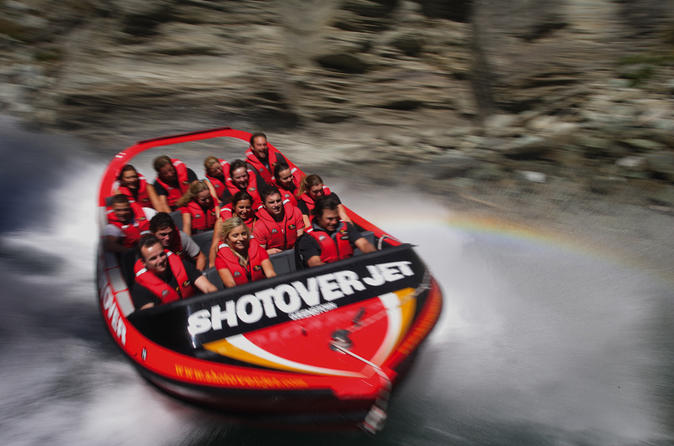
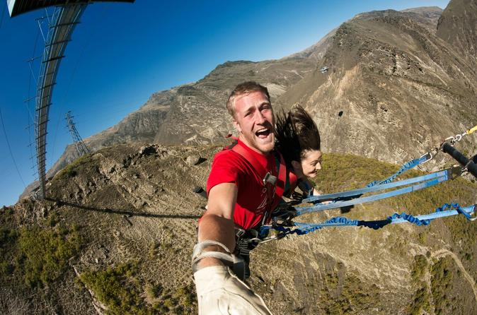
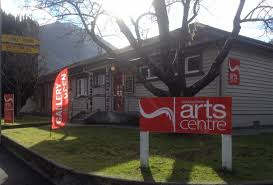
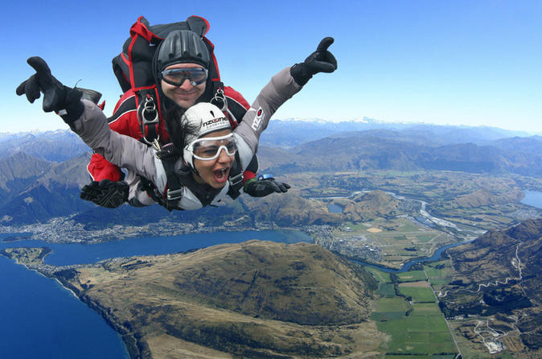
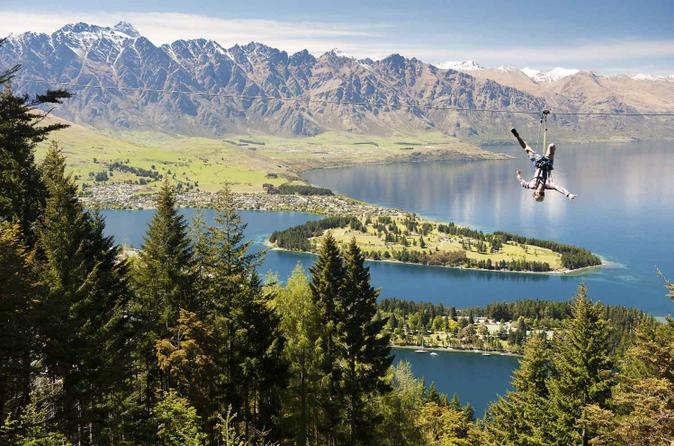
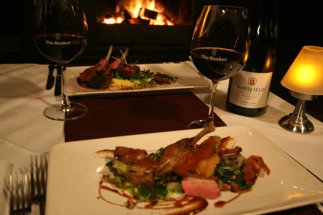
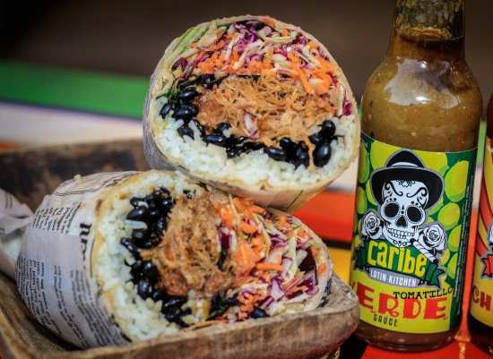
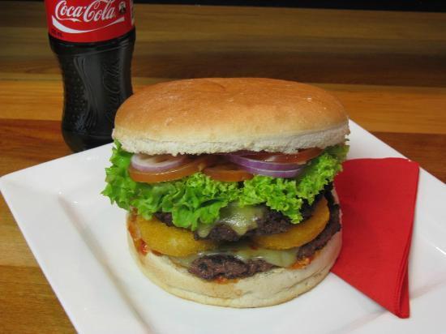
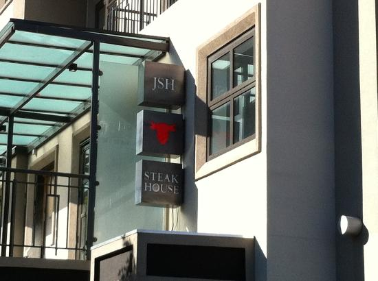
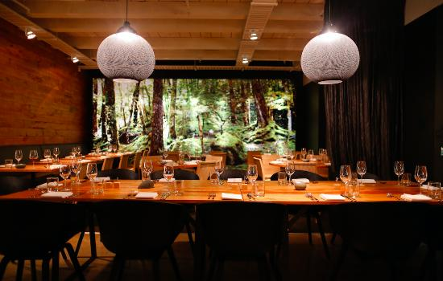

Places to Visit
Shotover River Extreme Jet Boat Ride
 Take a jet boat ride on the Shotover River during an extreme 25-minute ride, and make use of transport from Queenstown. Experience adrenaline-fueled fun as the jet boat skims the water’s surface at high speed and fishtails into 360-degree spins. Hold on tight as the captain maneuvers the jet boat over rapids and through narrow canyons during one heart-pounding adventure you won’t soon forget.
Call 0064 (49) 801-0529
Location: Gorge Rd, Queenstown 9300
Price: 165NZ$
Official Website
Biggest Swing: Nevis Swing
 Feel your heart pumping as you sway into a wide arc on the Nevis Swing, suspended from a high platform above the Nevis River. The world’s largest swing lets you free-fall before swooping through the air at high speed. Enjoy a 40-minute drive by 4WD vehicle from Queenstown before starting your daredevil experience in New Zealand’s adventure capital. Ride solo or with a friend, but if you’d prefer to watch you can select the Spectator Pass at booking.
Call 0064 (49) 801-0529
Location:(somewere on land) AJ Hackett Bungy
Price: 75NZ$
Official Website
Biggest Swing: Nevis Swing
 A unique space in Queenstown this community Art Centre is a haven for beautiful artwork. The contemporary Cloakroom Gallery welcomes you to a diverse blend of exhibitions from local artists. Covering a variety of visual arts including; painting, mixed media, sculpture, pottery, photography and jewellery our exhibitions change from month to month.
Call 0064 (49) 3-442 7782
Location: 49 Stanley Street, Queenstown 9300, New Zealand
Price: free
Official Website
Queenstown ATV Tour

Ride a quad bike on Queenstown Hill during this 3.5-hour ATV adventure. After a comprehensive training, hop on a fully automatic all-terrain vehicle and follow your guide over off-road trails (safety gear and all-weather clothing provided). Enjoy informative commentary and sweeping views over Queenstown. Hotel pickup and drop-off, along with refreshments, are included in this small-group tour, limited to 11 people.
Call 0064 (49) 801-0529
Location: 61A Shotover Street, Queenstown
Price: 265NZ$
Official Website
Skydive Queenstown
Skydive Queenstown — New Zealand’s outdoor adventure capital — and jump from 9,000, 12,000 or 15,000 feet. After a safety briefing, board a small plane and tandem skydive with an experienced guide. Free-falling for a minute at terminal velocity, you’ll reach speeds of up to 124 mph (200 kph), then relax as you soak up views of Lake Wakatipu and the Remarkables mountain range. Includes transport from Queenstown to the drop zone, just a 20-minute drive away.
Call 0064 (49) 801-0529
Location: 35 Shotover St, Queenstown, NZ
Price: 299NZ$
Official Website
Queenstown Zipline Tour
Soar through the Queenstown forest on the world’s steepest tree-to-tree zipline, plunging 30 stories down from the Skyline Gondola summit on a 3-hour tour. Tone down the adrenaline a notch on a 2-hour course, perfect for families with kids aged six and up. Expert guides supervise your launch from each aerial platform, so all you have to do is take in the panoramic views of Lake Wakatipu and the snow-capped Remarkables mountain range.
Call 0064 (49) 801-0529
Location: 45 Camp St, Queenstown 9127
Price: 139NZ$
Official Website
Place to Dine-in
The Bunker Restaurant
Hidden away down a back alley in the center of Queenstown behind a rustic old wooden door, The Bunker offers discreet and intimate 'rustic' fine dining – specializing in red meats, game and local produce with a distinctly New Zealand flavour complimented by crackling log fires, intimate atmosphere, personal service and an impressive wine list. Our Cocktail Bar upstairs from the restaurant offers hand crafted classic and modern cocktails and an extensive wine and premium spirit list in a cosy lounge atmoshere which welcomes guests right through to the wee small hours.
Call 0064 (49) 441 8030
Location: 14 Cow Lane, Queenstown 9300
Price: 21 - 43NZ$
Official Website
Caribe Latin Kitchen Restaurant
Queenstown does offer many types of cuisine from all around the globe, but not much in regards to Latin American or Caribbean flare which is a blast on flavour, colours and creativity. With the sounds of Salsa, smells of the Caribbean, the textures of the amazons, the colours of Latin America and the flavours; is to create a humble but intense composition for locals and visitors to enjoy. Our name: "Caribe Latin Kitchen". Our influence: all Latin America. Our Game: to combine the best from local ingredients and take them to a place where they dance with our cooking.
Call 0064 (49) 442 6658
Location: 36 Ballarat Street, Queenstown 9300
Price: 21NZ$
Official Website
Devil Burger Restaurant
Welcome to Devil Burger Queenstown! Devil Burger is Queenstown’s top gourmet burger bar, offering the best burgers and wraps in the Wakatipu. All our food is prepared fresh on site and cooked to order, you can choose from our biggest burger the infamous Mankiller or a classic, The Devil with Cheese, and not forgetting our lighter options... a selection of freshly made wraps that rival any of our burgers for tasty, devilish goodness. Yes, the Devil has something for all appetites big and small... If you are looking for a comfortable setting to enjoy your favourite Devil Burger.
Call 0064 (49) 442 4666
Location: Church Street, Queenstown, New Zealand
Price: 11.50NZ$
Official Website
Jervois Steak House Restaurant
The menu is a veritable who’s who of meats in all forms, sourced from the very best beef and lamb producers. The quality beef is carefully selected from the highest pedigree and defined by breed and feed. So you will find dishes like the Signature Prime Rib, selected from the finest 150-day grain fed Black Angus that has been dry aged then patiently roasted in their special oven. Or the Jervois cut eye fillet on the bone, farmed on the West Coast, which gives this animal an unmatched tenderness and flavour that can only come from cattle fed on New Zealand’s magnificent grasslands.
Call 0064 (49) 442 6263
Location: 8 Kent Street, Queenstown 9300
Price: 40NZ$
Official Website
Rata Restaurant
Rata is a collaboration between internationally recognised Michelin starred and New Zealand Masterchef judge, Josh Emett and highly regarded local restaurateur, Fleur Caulton. Their company, Mayfare Limited, is fast becoming synonymous in New Zealand for creating genuine dining experiences that are contemporary and inspired.
'Uniquely Southern', Rata takes inspiration from the Southern landscapes and everything that epitomises New Zealand. The decor uses influences from the Otago scenery mixed with modern industrial elements and reclaimed and repurposed vintage items to create a uniquely contemporary and welcoming dining room.
Call 0064 (49) 442 9393
Location: 43 Ballarat Street, Queenstown 9300
Price: 8NZ$
Official Website
Blue Kanu
Mixing both Pacifica and Asian style, together with blending the two cultures aims to create a style and feel that we call “Polynasia”. The combination of Asian cuisine is recognised as healthy, fresh and exotic, encompassing Pacific influence, along with ancient spices, helping to create the new cultural soul food not seen in this region before.
Our guests are encouraged to come and dine Polynasia tapa style plates at the bar or in the restaurant and soak up the art, culture and friendliness of the Pacific.
If you are lucky enough the staff will even sing and play guitar to you. Bluekanu has 2 wonderful “Koru” tables that can be reserved for that special evening with friends and family.
Call 0064 (49) 442 6060
Location: 16 Church Street, Queenstown 9300
Price: 17NZ$
Official Website